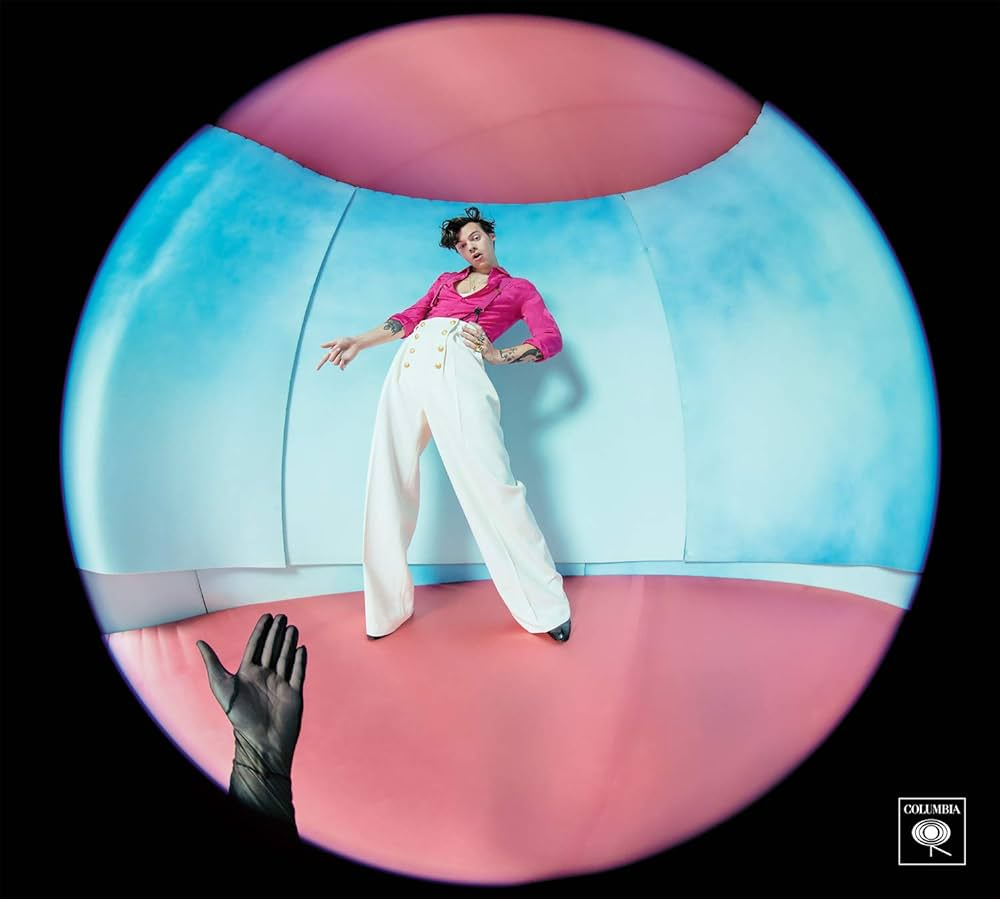
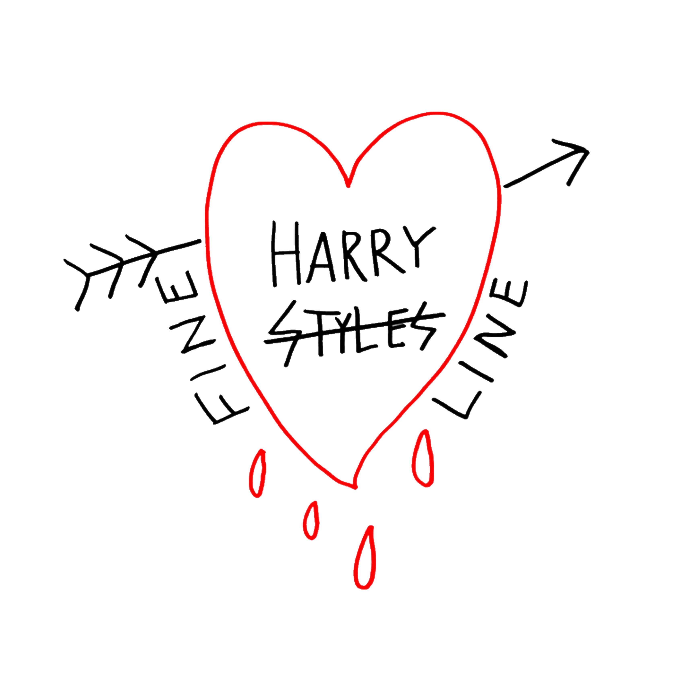

Harry styles
Harry Styles es el primer álbum de estudio del cantautor, modelo y actor británico del mismo nombre. Fue lanzado el 12 de mayo de 2017 a través de Erskine y Columbia Records. Este año cumple ya 7 años de lanzamiento.
Fine line
Fine Line es el segundo álbum de estudio del cantante y compositor británico Harry Styles, publicado el 13 de diciembre de 2019. Debutó en el número tres en la lista de álbumes del Reino Unido y en el número uno en el Billboard 200, lo que lo convierte en el segundo número consecutivo de Styles en álbumes en Estados Unidos. Tuvo la tercera semana de ventas más grande de 2019 en Estados Unidos, y rompió el récord como el debut más grande de un artista masculino británico con 478.000 unidades equivalentes al álbum,
Harry´s Houses
Harry's House (en español: La casa de Harry) es el tercer álbum de estudio del cantante británico Harry Styles. Fue lanzado el 20 de mayo de 2022 por Columbia y Erskine Records. El álbum fue desarrollado y grabado entre 2020 y 2021, y fue producido por Kid Harpoon, Tyler Johnson y Samuel Witte. Se destaca por ser el trabajo más introspectivo de Styles y musicalmente incorpora elementos del pop rock, synth pop y el R&B e influencias del funk. arry's House recibió críticas generalmente positivas por parte de los críticos de música y apareció en varias listas de los mejores álbumes de 2022, siendo considerado como el álbum más introspectivo y elogiado en la carrera de Styles.